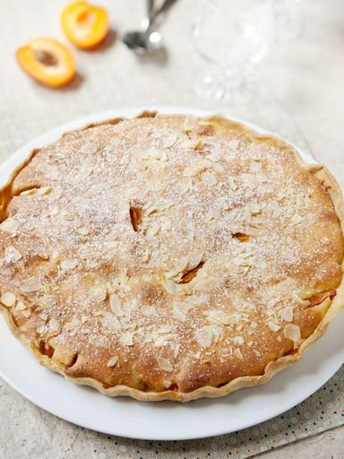

Tarte abricot chocolat blanc
Ingrédients
×
- 1 pâte brisée
- 2 oeufs
- 50 g de sucre
- 5 c. à s. de lait
- 200 g de poudre d'amande
- 125 g de chocolat blanc
- 1 boîte d'abricots au sirop
- quelques amandes effilées

Préparation
Étape 1
Étaler 1 pâte brisée dans le moule.
Étape 2
Battre énergiquement 2 oeufs avec 50 g de sucre. Ajouter 5 c. à s. de lait puis 200 g de poudre d'amande et bien mélanger.
Étape 3
Fondre 125 g de chocolat blanc (casserole ou micro-ondes) et en garnir le fond de tarte.
Étape 4
Disposer 1 boîte d'abricots au sirop égouttés (en moitiés ou découpés) sur le chocolat.
Étape 5
Recouvrir de préparation à l’amande et décorer de quelques amandes effilées.
Étape 6
Cuire environ 30min à 220ºC (th. 7-8), jusqu’à ce que les amandes brunissent. Servir tiède.
Conseils
La liste d’origine mentionnait deux fois 125g de chocolat blanc ; une seule dose suffit a priori.
Résumé
1 pâte brisée
2 oeufs
50 g de sucre
5 c. à s. de lait
200 g de poudre d'amande
Battre mélanger
125 g de chocolat blanc
Fondre
1 boîte d'abricots au sirop
Disposer
quelques amandes effilées
Recouvrir décorer
Cuire 220ºC